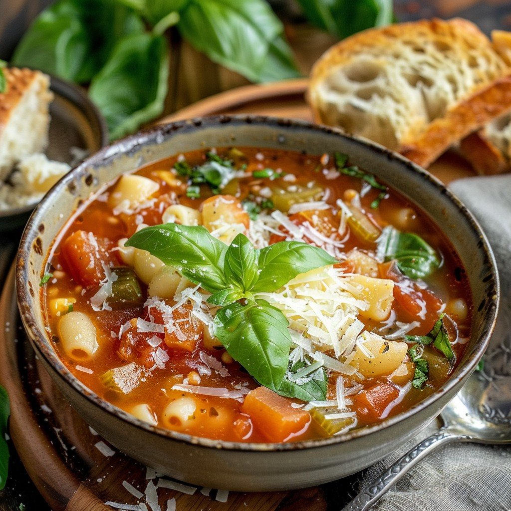

Minestrone Soup

Description
This is a minestrone soup recipe perfect for any day! It's packed with hearty vegetables and generously seasoned to perfection.
Minestrone soup is an incredibly versatile recipe that utilizes whatever you have on hand. A variety of legumes and vegetables
like corn, zucchini, squash, as well as different herb and aromatic combinations can be used to elevate this super simple soup.
The only prep needed is chopping the vegetables to size and cooking the beans if not using canned. This soup is a great idea for
a simple and easy dinner or lunch, enjoy!
Ingredients:
- 2 tablespoons olive oil
- 1 yellow onion, chopped
- 2 medium carrots, chopped
- 2 celery ribs, thinly sliced
- 1 teaspoon sea salt, plus more to taste
- Freshly ground black pepper
- 3 garlic cloves, minced
- 28 oz. diced canned tomatoes
- 1 1/2 cups cooked white or red kidney beans, drained and rinsed
- 1 cup chopped green beans
- 4 cups vegetable broth
2 bay leaves
- 1 teaspoon dried oregano
- 1 teaspoon dried thyme
- 3/4 cup small pasta; elbows, shells, orecchiette, etc.,
- 1/2 cup fresh chopped parsley
- Red pepper flakes
- Grated parmesan cheese; option for serving
Steps:
- Add oil to large pot over medium heat. Add the onion, carrotsm celery, salt, and several grinds of black pepper.
Cook, stirring occasionaly for about 8 minutges, until the vegetables begin to soften.
- Add the garlic, tomatoes, beans, green beans, broth, bay leaves, oregano, and thyme. Cover and simmer for about 20 minutes.
- Stir in the pasta and cook, uncovered, for 10 more minutes, or until pasta is cooked through.
- Season to taste and serve with parsley, red pepper flakes, and parmesan, if desired.
Home